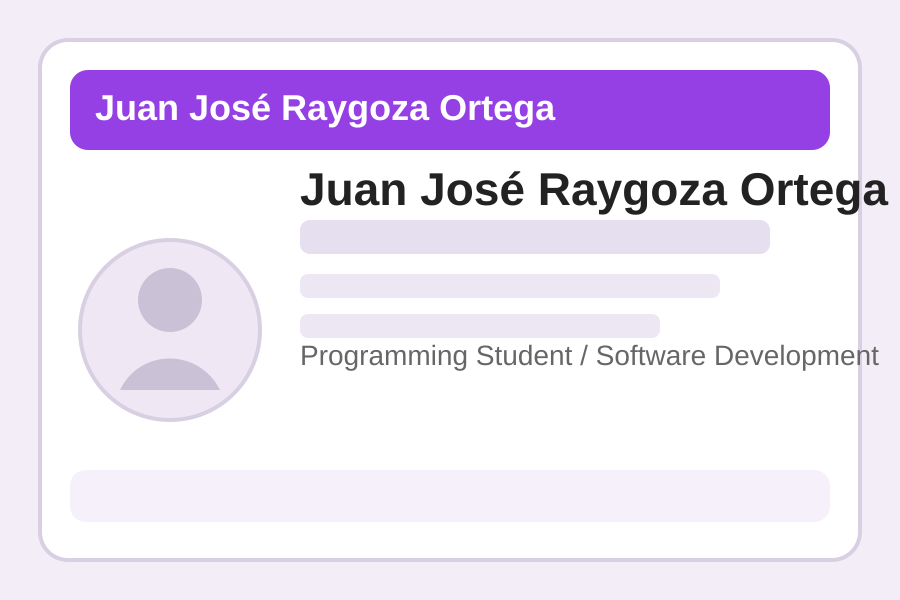

“Juan José demuestra interés constante por aprender nuevas tecnologías y mejorar sus proyectos en cada entrega.”
Cliente ficticio: Coordinación académica de proyecto
Presentación profesional
Programming Student / Software Development
Estudiante del Bachillerato Técnico en Programación de la Universidad del Valle de Atemajac (UNIVA), con interés en el desarrollo de software, las bases de datos y la construcción de aplicaciones funcionales. Me enfoco en aprender tecnologías modernas mientras fortalezco mis habilidades de lógica y resolución de problemas.

Soy estudiante de nivel medio superior inscrito en el Bachillerato Técnico en Programación de la Universidad del Valle de Atemajac (UNIVA). Me interesa conocer cómo se relacionan el desarrollo web, la programación orientada a objetos y las bases de datos para crear soluciones útiles y bien estructuradas.
Disfruto trabajar en proyectos académicos que me permitan practicar conexión a bases de datos, diseño de interfaces y desarrollo de lógica en distintos lenguajes.
Tabla de experiencia con período, empresa/proyecto, cargo y logros principales.
| Período | Empresa / Proyecto | Cargo | Logros principales |
|---|---|---|---|
| 2025 | Proyecto académico: Conexión PostgreSQL | Desarrollador estudiante | Conecté Python con PostgreSQL y ejecuté consultas básicas como SELECT e INSERT. |
| 2025 | Proyecto personal: Portafolio web | Diseñador y desarrollador | Organicé el contenido de un sitio web utilizando HTML semántico y estructura por páginas. |
| 2025 | Práctica escolar: Calculadora en Java | Programador | Apliqué lógica de programación, métodos y conceptos básicos de orientación a objetos. |
“Juan José demuestra interés constante por aprender nuevas tecnologías y mejorar sus proyectos en cada entrega.”
Cliente ficticio: Coordinación académica de proyecto
“Se distingue por su responsabilidad, disposición para resolver problemas y buena organización del trabajo.”
Cliente ficticio: Usuario de prueba del portafolio